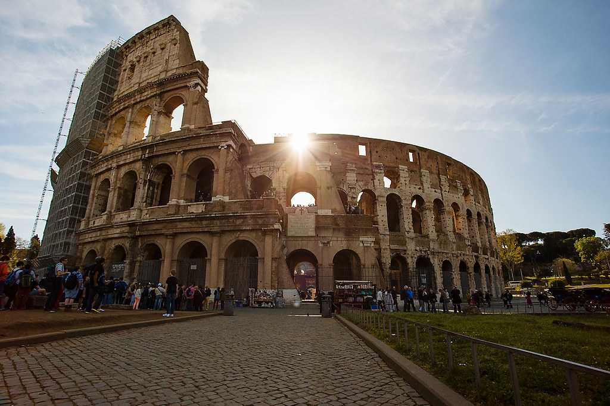
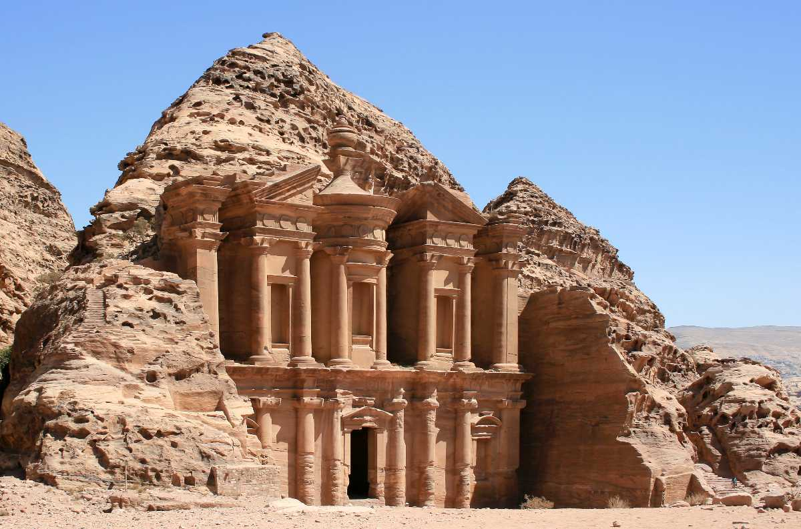

A magnificent embodiment of Shah Jahan’s deep affection for his wife, a wondrous marvel in the moonlight, Taj Mahal attracts 8 million tourists every year.
Great Wall of China
Beijing, China
The Great Wall of China stretches up to 21,196 kilometres and is an unforeseen series of fortifications built across China’s borders to mark territories.
Machu Pichu
Peru
Located in Eastern Cordillera, this 15th-century citadel of the Incas was formed atop fault lines by earthquakes and is brilliant for its walls of dry stone fused with boulders without mortar.

The Colosseum
Rome, Italy
This 2000-year-old oval-shaped amphitheatre in the heart of Rome city is an iconic retention of Imperial Rome and its unique culture.
Christ the Redeemer Statue
Rio de Janerio, Brazil
Rio de Janeiro’s most famous Art Deco statue of Jesus Christ stands 38 meters tall as a colossal protector of the people and was built to commemorate the anniversary century of Brazil’s independence.

Petra
Petra, Jordon
Known for stunning, intricate architecture and modern water channel systems, Petra houses sightseeing spots like the lengthy Siq, the Temple of Winged Lions and the Treasury.
Chichen Itza
Cancun, Mexico
The highlight of this archaeological site is Kukulcan Pyramid with larger pyramids built atop smaller ones. The monument has one of the most elaborate excavations of the Jaguar throne within.